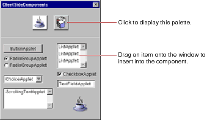

Table of Contents
Table of Contents  Previous Section
Previous Section
Palettes
A palette is a collection of resources (such as images, static or dynamic HTML elements, and components). You can drag elements from a palette to a component to use them. You can also drag elements from a component to a palette to store them.Palettes appear in WebObjects Builder's palette window. To open the palette window, click on the toolbar or choose Tools

The icons at the top of the palette window show the available palettes. To select a palette, click its icon. Two pre-configured palettes are provided: Java client-side components and components from the WOExtensions framework.
You can create your own palettes to store frequently-used items, such as custom forms, tables, or images, and you can load palettes created by someone else.
To create a new palette, choose Palettes
 . To change the palette's icon, see "Changing a Palette Icon".
. To change the palette's icon, see "Changing a Palette Icon". Next Section
Next Section